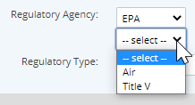
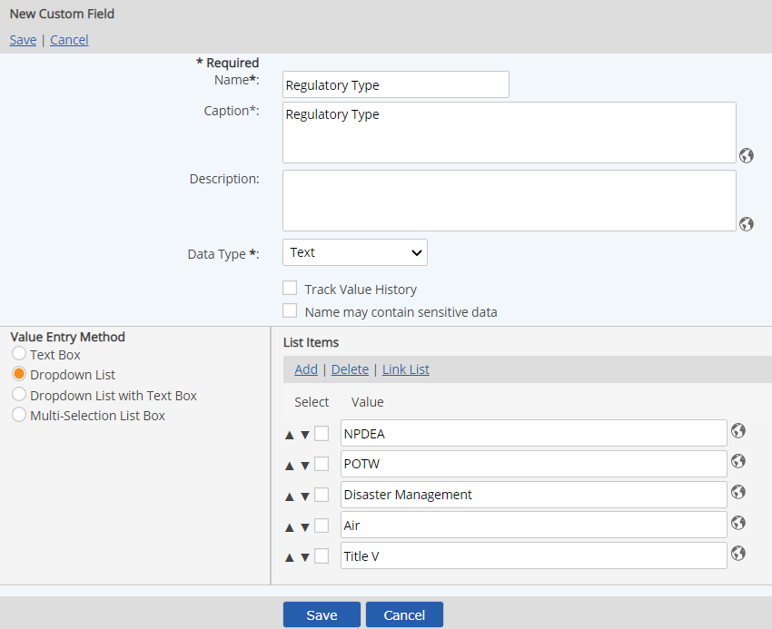
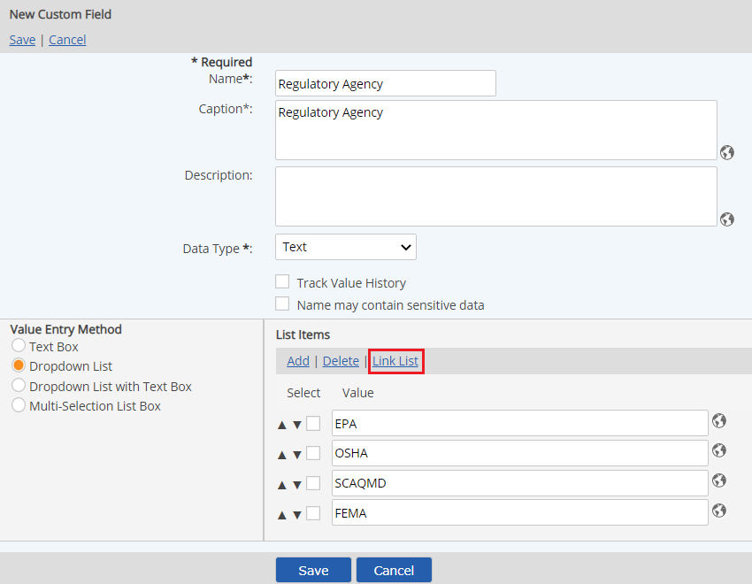
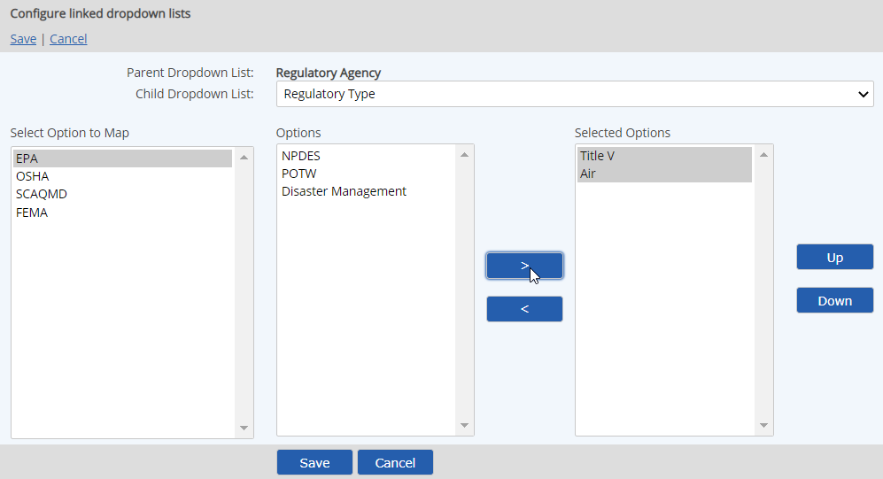

Linked lists allow users to select an initial option from one list. Then, depending on the option chosen, a second list appears with options specific to the selection in the first list.

Linked lists may be nested to as many levels as desired, by linking child lists to subsequent lists. Before setting up a linked list, you must create the child list to link first, then configure the parent list to link to the child list.
To create linked lists:
Create the list to be used as the child list first. (These are the last set of options to appear.)
See Dropdown List.
The child list should have all the value options that will be matched to each parent list option. You will choose which values from the child list to display for each parent list item.

Create the parent list and add the values for this list.
If you have already created the parent list, and are now ready to set up the link, search for the list in the Custom Field Library. Right click on the parent list and choose Edit.
After creating the options for the parent list, select Link List.

Select the Child Dropdown List.
All value options for the child list appear in the Options pane.
Select a parent list option in the left pane. Then select the options from the child list to match with this choice. Use the > button to move them to the Selected Options pane.

Select the next option from the parent list pane, and select the child list options to match with this choice.You can reorder the items in each list by selecting them and moving them up or down with the Up and Down buttons.
In order to assure that links between lists are not broken, you cannot delete a list field if it has a link to another child list. You must either delete the child list field first, or remove the link.
When you add a linked list to a template, you need only select the parent list and the child list will also be included.